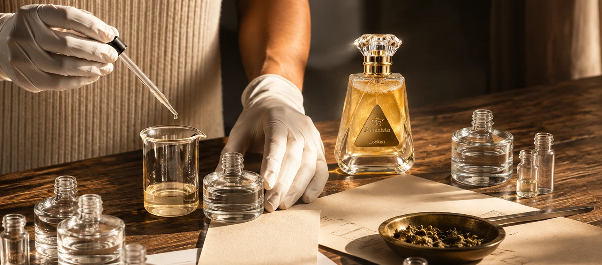
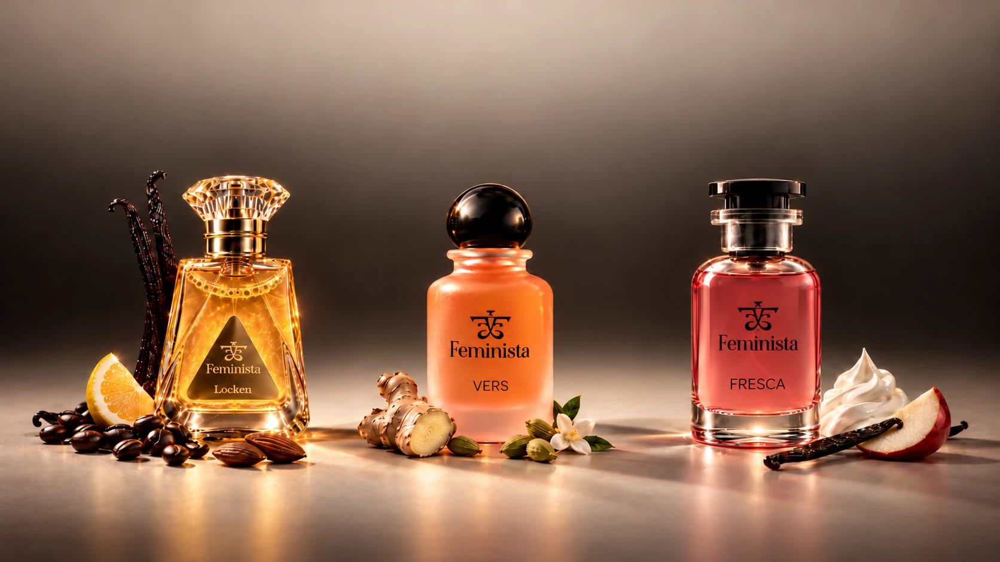
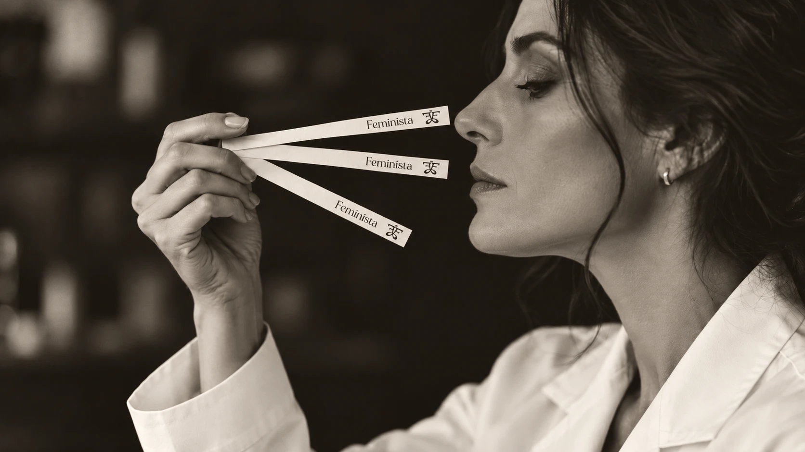
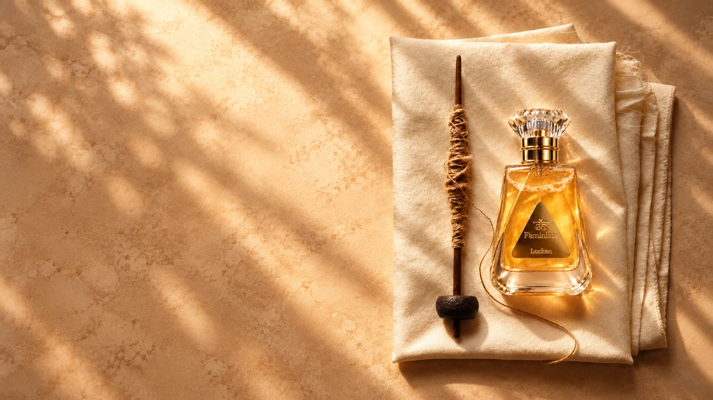

The Art of 180
Time is our rarestingredient
Nearly six months. One composition. No shortcuts.
Scroll

Room I
Phase 01 / 05
Selection
Rare, pure materials, sourced for character rather than convenience.

Room II
Phase 02 / 05
Composition
Top, heart and base notes, balanced by hand into a single accord.
- TopAlmond · Coffee · Bergamot · Lemon
- HeartTuberose · Jasmine sambac · Orange blossom · Bulgarian rose
- BaseTonka · Cacao · Vanilla · Praline · Sandalwood · Amber

Room III
Phase 03 / 05
Maturation
180 days of rest
The composition is left alone until the notes soften, deepen and settle into each other.
Day 000/ 180

Room IV
Phase 04 / 05
Evaluation
Assessed and refined until the balance feels right. If it is not ready, it waits longer.
Assessing the balance…

Room V
Phase 05 / 05
Bottling
Filtered, bottled and finished by hand. Only then does it leave the House.
- Filtered
- Bottled
- Finished by hand
Some things only time can perfect.
The collection · Three expressions, shaped by patience